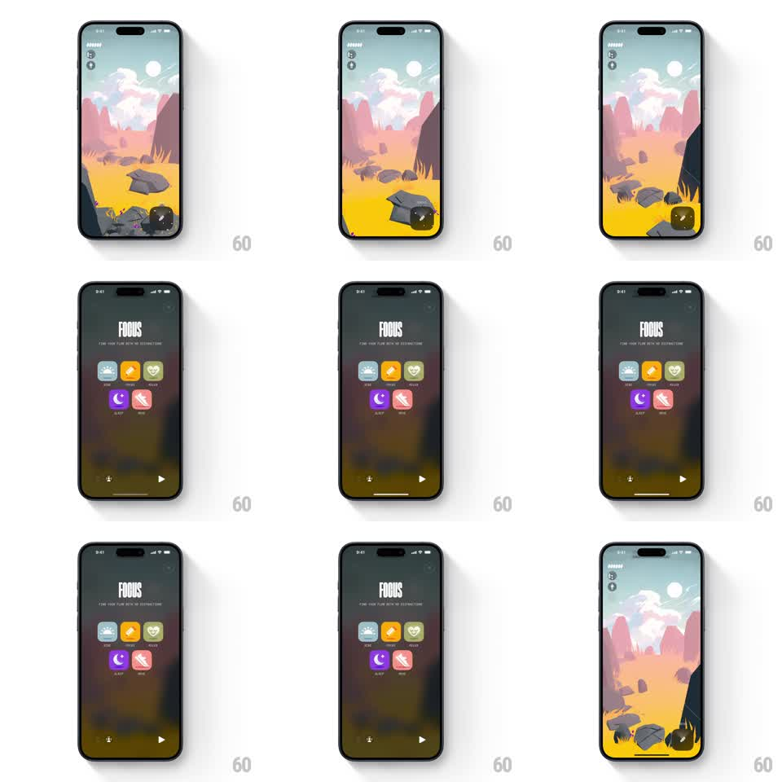

Media
Frame-by-frame

Rebuild this interaction 1:1: Not Boring Vibes' menu FAB - the round floating button morphs into a full-screen dark menu overlay whose mode icons spring in as a staggered grid.

Rebuild this interaction 1:1: Not Boring Vibes' menu FAB - the round floating button morphs into a full-screen dark menu overlay whose mode icons spring in as a staggered grid. ## Integration Integration: stack-agnostic spec - springs given as stiffness/damping, timed motions as duration + curve; map every value to your framework and animation library of choice. ## Scene The landscape scene (desert, floating rocks) with a small round FAB bottom-right. Open state: a full-screen dark blurred overlay titled "FOCUS" in condensed type with the tagline "Find your flow with no distractions", a 2-column grid of mode tiles (rounded squares with glyph art: teal, yellow, green, purple, pink), and a play control at the bottom. ## Motion spec Pattern: FAB-to-overlay morph with staggered grid entrance. - Tap the FAB: it scales up and fades (200ms) as the dark overlay fades in over the scene, the landscape blurring behind it (300ms). - The "FOCUS" title drops in from above (250ms, ease-out). - Grid tiles spring in staggered from bottom to top, left to right: each tile translateY 24px to 0 with opacity, spring stiffness ~260, damping ~22, ~60ms stagger between tiles. - The bottom play control fades in last (200ms after the final tile). - Close (tap outside or the close control): the sequence reverses faster - tiles fade out together (150ms), overlay dissolves (250ms), and the FAB scales back in with a slight overshoot (spring stiffness ~300, damping ~18). ## Calibration - The stagger reads as a ripple from the bottom, not a random scatter. - The scene stays live and blurred behind the overlay - never cut to a flat black background. ## Reduced motion Overlay crossfades; tiles appear without stagger or translation. ## Don't miss - Each tile keeps its own saturated color against the dark blur - the grid is the only color on screen. - The title is condensed caps, centered, small - restraint against the loud grid.